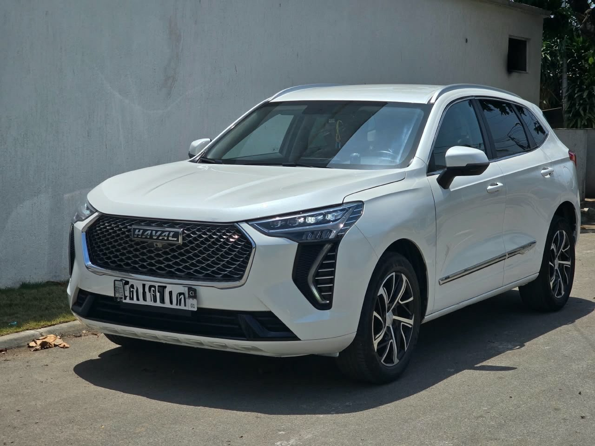

À vendre
Haval Jolion 2024 — By Rimco
2024 · Essence · Automatique · 19 000 km
14 900 000 FCFA
Année2024
Mention vendeurBy Rimco
BoîteAutomatique
ÉnergieEssence
Cylindres4
Kilométrage19 000 km
ClimatisationOui
IntérieurCuir
CaméraRecul
MultimédiaÉcran multimédia
Haval Jolion 2024 By Rimco, essence 4 cylindres et boîte automatique, avec 19 000 km au compteur selon le vendeur. Climatisation, intérieur cuir, caméra de recul et écran multimédia.
Contactez TVB CI AUTO pour les informations, la position du véhicule et une visite.